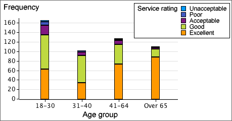
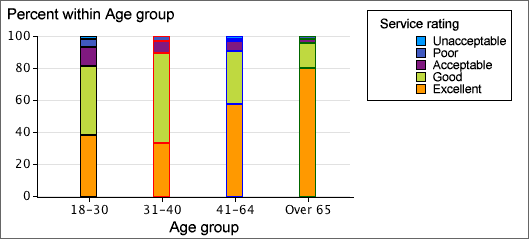

Stacking the bars
The bars for each group in a bar chart can be stacked to help make comparisons between the groups. Stacked bar charts are particularly effective when the categorical variable is ordinal (has categories that can be meaningfully ordered).
The diagram below is a stacked bar chart showing results from a questionnaire sent to account holders at a bank.

The age distribution of account holders is clearest from this bar chart. By stacking the proportions within age groups, this information is lost but it is easier to see that a bigger proportion consider the service to be excellent in the oldest two age groups and almost 20% in the 18-30 age group consider the service to be only acceptable or worse.
